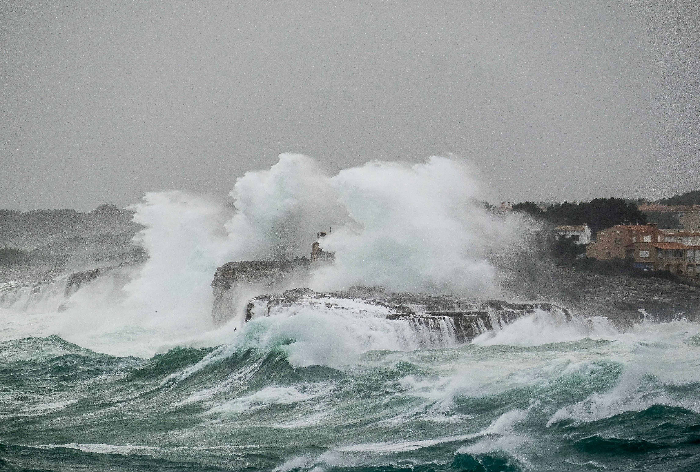
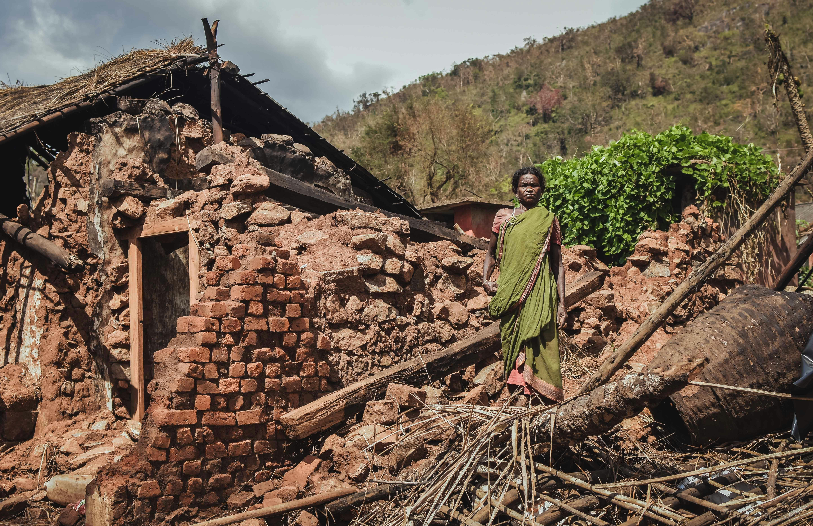
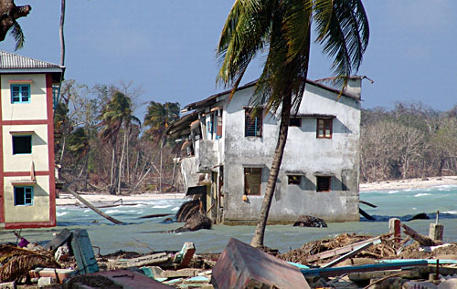
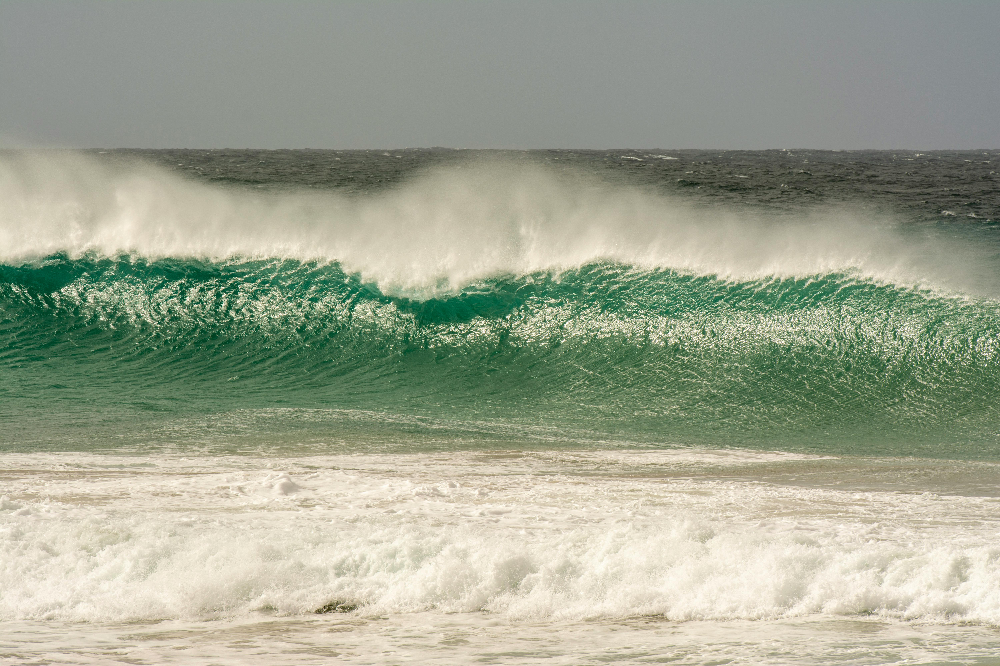

Know more
Sumatra, Indonesia
26 December 2004
The 9.1 magnitude earthquake off the coast of Sumatra was estimated to occur at a depth of 30 km. The tsunami was as tall as 50 m, reaching 5 km inland near Meubolah, Sumatra.Know more

Know more
North Pacific Coast, Japan
11 March 2011
A powerful tsunami travelling 800km per hour with 10m-high waves swept over the east coast of Japan, killing more than 18,000 people.Know more

Lisbon, Portugal
1 November 1755
A magnitude 8.5 earthquake caused a series of three huge waves to strike various towns along the west coast of Portugal and southern Spain, up to 30 m high, in some places. The tsunami affected waves as far away as Carlisle Bay, Barbados, where waves were said to rise by 1.5 m.Know more

Know more
Northern Chile
13 August 1868
This tsunami event was caused by a series of two significant earthquakes, estimated at a magnitude of 8.5, off the coast of Arica, Peru (now Chile). The ensuing waves affected the entire Pacific Rim, with waves reported to be up to 21 m high, which lasted between two and three days.Know more

Ryuku Islands, Japan
24 April 1771
A magnitude 7.4 earthquake is believed to have caused a tsunami that damaged a large number of islands in the region; however, the most serious damage was restricted to Ishigaki and Miyako Islands.It is commonly cited that the waves that struck Ishigaki was 85.4 m high, but it appears this is due to a confusion of the original Japanese measurements.Know more

Know more
Ise Bay, Japan
18 January 1586
The earthquake that caused the Ise Bay tsunami is best estimated as being of magnitude 8.2. The waves rose to a height of 6m, causing damage to a number of towns. The town of Nagahama experienced an outbreak of fire as the earthquake first occurred, destroying half the city.Know more